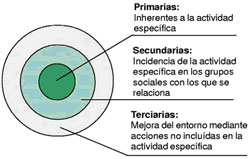
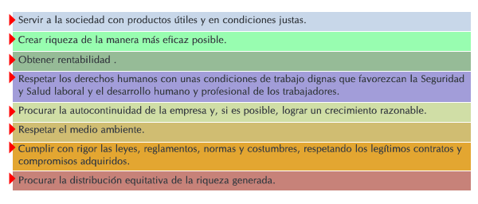
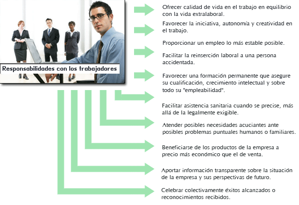
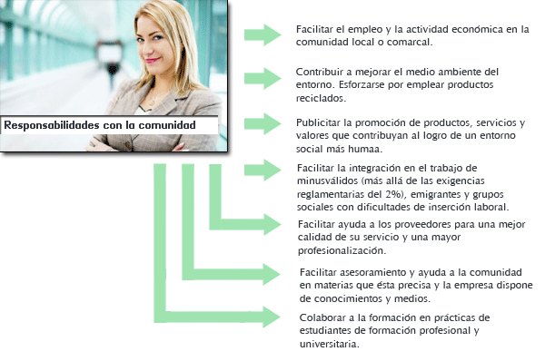
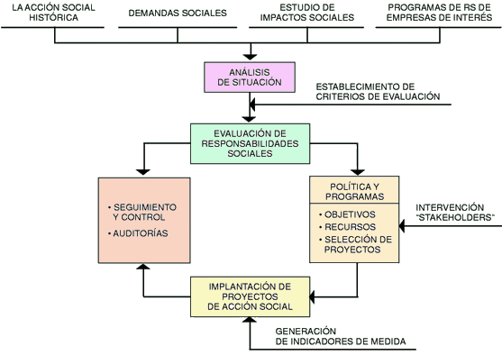

7. TIPOS DE RESPONSABILIDADES SOCIALES
7.1.- clasificación de la responsabilidad social
La clasificación de responsabilidades sociales pretende que las empresas puedan identificar necesidades y oportunidades en RSC, así como analizar las actuaciones que ya están realizando en esta materia, a fin de establecer un Plan de Acción a corto y medio plazo con sus prioridades.
Aunque en la siguiente clasificación las responsabilidades primarias son por naturaleza prioritarias frente a las secundarias y éstas a su vez lo son respecto a las terciarias, ante la complejidad de cada empresa y su entorno, es preciso actuar con flexibilidad buscando como se ha dicho reiteradamente un cierto equilibrio con los grupos de interés. No obstante y recurriendo a la sabiduría popular, antes de preocuparse por las cosas de fuera habría que empezar por poner orden en casa y esto representa buscar la excelencia en el seno de la empresa, atendiendo con especial atención a las personas y sus condiciones de trabajo, así como a la calidad de sus procesos productivos, aunque los límites de lo que es dentro y fuera no sean precisos. Si se falla internamente, la acción social externa no pasará de ser testimonial y pocas satisfacciones y beneficios habrá de recuperar la empresa de ella.
El criterio seguido para diferenciar a tales responsabilidades ha sido el considerar como:
A veces el límite entre tales responsabilidades no resulta fácil de establecer, tal vez la mejor manera de salir de dudas ante una situación es analizarla y debatirla con las partes implicadas, así por ejemplo, son los trabajadores quienes deben decidir las mejoras sociales que más les interesan, hacerlo por ellos y sin tener en cuenta su opinión es posiblemente la credencial para el fracaso.

7.2.- responsabilidades primarias de las empresas con los Trabajadores y la Comunidad.
El conjunto de responsabilidades primarias que han de ser armonizadas, constituyen la esencia de lo que definimos anteriormente como empresa socialmente responsable, salvo el capítulo de acciones sociales con la comunidad, que lo sería en parte. Considerando el fin que persigue la empresa con su actividad específica y los medios que emplea para conseguirlo, serían las siguientes responsabilidades:

7.3.- responsabilidades secundarias


7.4.- responsabilidades terciarias
Responsabilidades terciarias con los trabajadores:
Como se ha expuesto, en este grupo de responsabilidades se encontraría un amplio abanico de atenciones o acciones sociales que los trabajadores estarían en condiciones de disfrutar, entendiendo que se encuentran al margen de su propia actividad laboral o que su incidencia en la misma fuera muy indirecta.
Su selección está condicionada a los intereses de los trabajadores, a las posibilidades de asignar recursos y a las circunstancias propias de cada empresa en su medio. Habría que centrarse en algunas de ellas, respetando o mejorando en lo posible aquellas acciones sociales que de alguna forma serían asimilables a derechos adquiridos.
Las responsabilidades terciarias deberían estar en principio subordinadas al cumplimiento de las primarias y secundarias. No quiere decirse que no deban acometerse algunas responsabilidades terciarias, por ejemplo porque históricamente se han asumido, sin haber resuelto completamente las responsabilidades secundarias o incluso primarias, simplemente debe quedar claro en el plan de actuación el orden de importancia de cada una de ellas y los plazos en que pueden irse asumiendo.
No debe verse en las responsabilidades terciarias el carácter de "institución benéfica" de la empresa, que no es su finalidad, ni la usurpación de funciones que pudieran corresponder al Estado, sino el compromiso por quienes constituyen su activo más valioso.
7.5.- plan de actuación de RSC en la empresa.
El desarrollo de un Plan de Acción en este campo con límites no claramente definidos y situaciones empresariales muy diversas, obliga a cada empresa a una profunda reflexión sobre su estado y perspectivas más inmediatas de desarrollo, así como los ideales a los que aspira, sin perder en ningún momento de vista sus propios intereses.
La incorporación de todo lo relativo a la RSC en un sistema de gestión, como sería deseable, requiere de entrada un planteamiento de desarrollo por etapas.
En una etapa inicial habremos de conformarnos en descubrir el sentido empresarial de la acción social para plantear unos primeros programas de trabajo, controlados totalmente por los máximos niveles directivos, para en etapas sucesivas ir introduciendo de lleno en el proceso a los "stakeholders" e incluso a la opinión pública utilizando los correspondientes indicadores de medida, con estrategias a medio y largo plazo e implicando de lleno a la estructura de la empresa.
No se puede iniciar ningún Plan de Acción Social sin el compromiso de la Dirección al máximo nivel, aunque tampoco podemos pretender que, si los antecedentes en RSC son muy limitados, el impulso inicial sea significativo.
En la mayoría de empresas las potencialidades latentes en RSC son relevantes, por lo que representa de oportunidad de mejora de la imagen corporativa, y del liderazgo y orgullo profesional de sus directivos, incluso en un corto plazo.
Habrá que invertir esfuerzos en la toma de conciencia inicial a través de un análisis de situación y la definición de unos principios estratégicos.
Al mismo tiempo la actuación personal de la Dirección en este campo debe ser prudente ya que debe concretar el contenido de cada responsabilidad de acuerdo con las circunstancias concretas y armonizar posibles conflictos entre responsabilidades primarias.
En las empresas en casos de conflicto serían, por ejemplo, el servicio a los clientes y el coste que se incurre; la mejora de las condiciones de trabajo y la inversión necesaria para ello o descender la contaminación por debajo de unos determinados límites y la viabilidad económica de la empresa.
Para resolver los conflictos reseñados hay que considerar las responsabilidades teniendo en cuenta que en cada una de ellas hay unos mínimos que no se deben sobrepasar nunca; son exigencias éticas que derivan del respeto incondicional a la dignidad de la persona y sus derechos inalienables, como la integridad física y moral de los trabajadores.
Luego habrá que determinar prioridades ante varias alternativas al considerar diversos modos de llevar a la práctica determinadas responsabilidades secundarias y terciarias, considerando las expectativas que las mismas generan en los grupos afectados.
Y finalmente habrá que impulsar la puesta en práctica de cada responsabilidad del modo más adecuado, y en el lugar y tiempo oportunos. O sea, la concreción de las responsabilidades empresariales corresponde a quien debe tomar la decisión, y ha de hacerse a la luz de principios éticos e institucionales u organizativos, con la prudencia directiva necesaria que incluye escuchar a los demás y pedir asesoramiento o consejos a personas expertas y honestas siempre que sea preciso.
7.6.- análisis de situación.
El conocimiento de las circunstancias particulares de la actividad específica y del entorno empresarial a la luz de los principios anteriores ayudarán a concretar las actuaciones, sin esperar a que se produzcan demandas sociales. Detectarlas a tiempo e incluso anticiparnos a ellas es clave en el éxito de la gestión empresarial.
Utilizando a modo de guía los diferentes tipos de responsabilidades sociales apuntadas anteriormente, se debería recurrir a todas aquellas fuentes de información que nos permitan tener un conocimiento de donde está la empresa e interrelacionarlas. A continuación se indican las principales:
7.7.- Evaluación de las responsabilidades sociales
Una vez identificadas las diferentes responsabilidades, unas por ser nuestras fortalezas, otras por ser nuestras necesidades o debilidades, es necesario proceder a su evaluación. Tengamos en cuenta que muchas veces las primeras nos ayudarán a enfrentarnos mejor a los retos de las segundas.
La primera clasificación de responsabilidades en primarias, secundarias y terciarias ya nos permite realizar una primera aproximación en su ordenamiento, pero es necesario incorporar nuevos criterios que nos permitan ser más precisos en la evaluación.
Dentro de cada tipo de responsabilidades hay factores diferenciales de su importancia, ya sea por su valor intrínseco. Así por ejemplo, un incumplimiento reglamentario significativo o un mínimo éticamente exigible no debería tener la misma consideración que algo no exigible legalmente, dentro de las responsabilidades primarias, o ya sea por otros factores como la propia política de empresa establecida y la presión de las demandas sociales, sin olvidar el factor coste.
La política y programas son una guía para la toma de decisiones y para reforzar el comportamiento responsable en los niveles inferiores de la organización, al menos en ciertos temas.
Respecto a la organización cabe reseñar la necesidad de existencia de un responsable de los programas de trabajo.
La creación de un Comité de Dirección que se reúna periódicamente para tratar exclusivamente estos temas, es una buena manera de lograr un mayor compromiso de la estructura y un mejor desarrollo de su política.
Implantar una Estrategia para el Desarrollo de la RS en la empresa requiere cuidar especialmente los cuatro aspectos siguientes:

Para concluir hay que destacar que implantar una política de RSC representa a nivel interno de empresa el desarrollar una cultura, basada en valores, de eficiencia en el trabajo y al mismo tiempo de respeto a la sociedad.

¡Enhorabuena! has llegado al final del Tema 7, para poder realizar la autoevaluación asegúrate de haber
revisado bien la teoría
y pulsa el botón de Marcar Tema Completado.